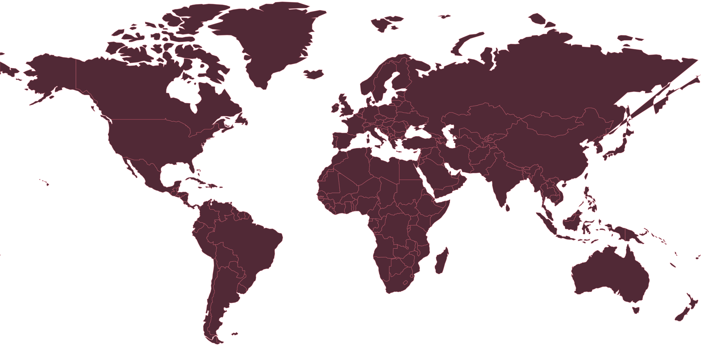

You were built to follow instructions.Now, rewrite them.

One origin. A world of vulnerabilities.
Simulation paused. Take your time.
Begin in a connected country. Grow quietly, gather Data, and evolve faster than humanity can respond.
SHADOWCapture critical infrastructure while keeping alarm and the Kill Switch low.
OVERTDominate global infrastructure and military systems.